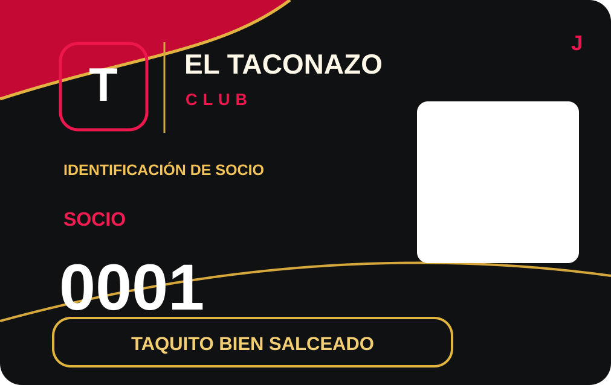

Tarjeta de Tío Luis
Taquito Bien Salceado · Socio 0001

Descargar tarjeta originalEl archivo SVG conserva la calidad al ampliarlo para imprimir. Todas las esquinas de la tarjeta están redondeadas de la misma forma. Si Chrome abre la imagen en lugar de descargarla, usa el menú de tres puntos y selecciona Descargar.